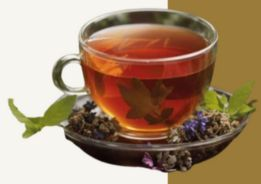

Herbal Teas/Infusions made from various plant parts, have ancient origins rooted in medicinal and cultural traditions across multiple civilizations. Unlike true tea, which comes from the Camellia sinensis plant, herbal teas are made from edible flowers, fruits, roots, and leaves. It is also rooted in China where they were first used for their medicinal properties, a practice that spread through ancient Egypt, Greece, and later to the rest of the world. The earliest documented evidence comes from the Tang Dynasty in China around 720 AD, as well as ancient Egyptian records of peppermint leaves. These infusions were valued not only for physical healing but also for spiritual and mental well-being before becoming popular for enjoyment and health benefits in modern times.